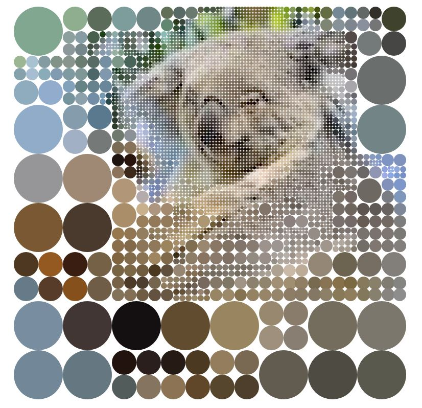

| numéro | lien | catégorie | image |
|---|---|---|---|
| 1 | koala | se déplacer à l'aide de la souris |  |
| 2 | Les rois de la souris | se déplacer à l'aide de la souris | |
| 3 | Le glisser-déposer (démo) | glisser-déposer avec la souris | |
| 4 | Dessiner avec la souris (Art fractal) | glisser-déposer avec la souris | |
| 5 | sudoku | glisser-déposer avec la souris | |
| 6 | Cliquer (gauche) | cliquer avec la souris | |
| 7 | Double-cliquer sur des cibles de + en + petites | (Double) cliquer avec la souris | |
| 8 | Clic gauche, droit et double | cliquer, double cliquer, cliquer à droite pour plus d’options |